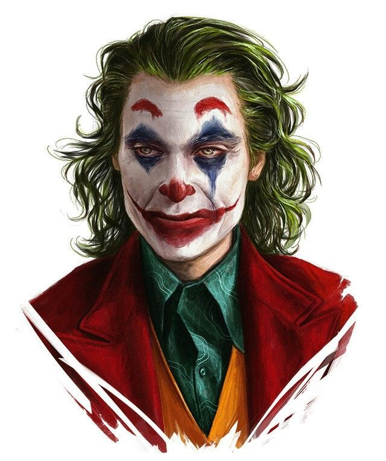

BATMAN
Bruce Wayne es el único personaje que se identifica como Batman y
aparece en Batman, Detective Comics, Batman y Robin, y Batman: The Dark Knight.
Dick Grayson vuelve al manto de Nightwin.
Ver más

HARLEY QUINN
La creación de Harley Quinn fue una idea de último minuto propuesta
por el escritor estadounidense Paul Dini para modificar una escena.
Ver más

BATMAN
Bruce Wayne es el único personaje que se identifica como Batman y
aparece en Batman, Detective Comics, Batman y Robin, y Batman: The Dark Knight.
Dick Grayson vuelve al manto de Nightwin.
Ver más